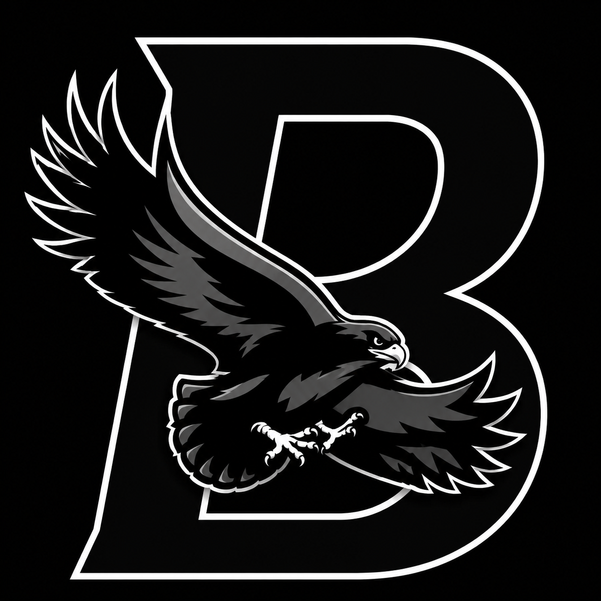

Official Disclaimer • Unofficial Roblox Community Project
Project Hawk is an independent, fan-made Roblox experience created solely for entertainment. It is not affiliated with, endorsed by, sponsored by, or approved by Fairfax County Public Schools (FCPS), Holmes Middle School, or any administrators, teachers, staff members, or official organizations.
This experience draws inspiration from a real-world school environment while existing as a fictional Roblox game. Names, logos, branding, characters, gameplay systems, and many elements have been modified or created specifically for this project. The game should not be interpreted as an official representation of any real school or institution.
All gameplay features, including combat, competition, character interactions, and events, exist solely as fictional game mechanics designed for entertainment. They do not represent real events, real individuals, school policies, or actual activities occurring at any educational institution.
Project Hawk is developed independently and is intended for members of the Roblox community. Any resemblance to real locations is not intended to imply sponsorship, partnership, endorsement, or any other official relationship with FCPS, Holmes Middle School, or any educational institution.